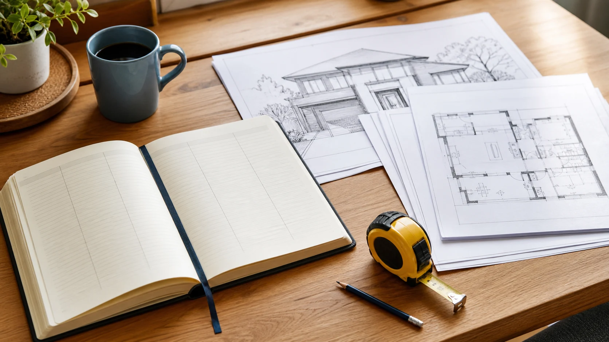

給湯設備が止まったとき、型番が分からない。前に頼んだ工事会社の名前を、家族の誰も覚えていない。普段は困らなくても、いざというときに家の情報を探すことがあります。
家の取扱説明書は、建物を難しく管理するための書類ではありません。家族の誰か一人だけが知っていることを、必要な人が分かる状態にする記録です。完璧な資料がそろっていなくても、今確認できる五つの項目から始められます。
家の基本情報、設備、工事履歴、使い方、相談先を五項目で整理。家族へ引き継ぐ記録と個人情報の扱いを紹介します。
公開日：未定
住まいの記録 文｜エイスケ（住宅と教育の専門家）
文｜エイスケ（住宅と教育の専門家）
給湯設備が止まったとき、型番が分からない。前に頼んだ工事会社の名前を、家族の誰も覚えていない。普段は困らなくても、いざというときに家の情報を探すことがあります。
家の取扱説明書は、建物を難しく管理するための書類ではありません。家族の誰か一人だけが知っていることを、必要な人が分かる状態にする記録です。完璧な資料がそろっていなくても、今確認できる五つの項目から始められます。
所在地、建築時期、構造、工事や購入の際の関係先など、分かる基本情報をまとめます。図面、仕様書、契約関係の書類は、まず「どこにあるか」を一覧にするだけでも役立ちます。
住宅金融支援機構は、新築時の図面や仕様書、点検・修繕の記録を保管することの大切さを案内しています。[1] ただし、図面があるから現状も同じとは限りません。後から変更した箇所があれば、その記録を関連づけます。
書類が見つからなければ、建てた会社、購入時の窓口、管理会社などへ、保管資料がないか確認します。情報がない部分は「不明」と書いて構いません。記憶だけで確定した年や工法を書き込まないことが、後の誤解を減らします。
給湯設備、換気、キッチン、トイレ、照明、エアコンなど、困ったときに問い合わせる設備から記録します。メーカー、型番、設置・更新時期、保証書、説明書の場所をひと組にします。
型番は、安全に見える銘板などを確認します。高所や設備内部へ無理に手を伸ばして撮影する必要はありません。説明書や工事記録から確認できる場合もあります。似た見た目の製品名をインターネットから推測して書かないようにしましょう。
保証には条件があります。保証書を持っているだけで、どの故障も無償になるとは限りません。問い合わせ時は、使用状況と症状を伝え、適用範囲を確認します。リコールなどの情報も、メーカーの正式な案内で照合してください。
図は筆者が整理した記録項目の例です。法定書類や権利関係の確認に代わるものではありません。[1]
「去年、どこかを直した」だけでは、次の相談で説明しにくくなります。外壁のどの面を補修したのか、給湯設備をどの型番に更新したのか。場所、日付、工事内容、会社名、金額が分かる資料をまとめます。
工事前後の写真、見積書、契約書、図面などを一緒に保管します。[1] 見積もりだけの計画と、実際に施工した内容は分けておきましょう。工事の途中で変更があった場合は、最終的な内容が分かる書類も残します。
写真は、近くから撮った一枚だけでなく、家のどこかが分かる全体像があると便利です。専門家が残した点検結果は、家庭の感想と別に保管します。「今回は経過観察」「次の点検で確認」といった残件も忘れずに引き継ぎます。
換気フィルターの清掃、設備の操作、季節ごとの手入れなど、説明書の参照箇所と一緒にまとめます。長い説明を自分たちで書き直すより、「この操作は説明書のここ」と分かるようにすると、転記の間違いを減らせます。
水栓や分電盤などの場所を把握しておくことも相談の助けになります。ただし、家族用メモだけを根拠に、危険な設備を操作したり、故障を直そうとしたりしないようにします。異常時は、製品や供給事業者の正式な案内を優先してください。
困りごとは、いつ、どの条件で起きたかを書きます。「雨の強い日に窓枠の右側が濡れる」「換気を運転すると以前と違う音がする」といった記録です。原因を推測して確定させず、相談で確かめる材料にします。
施工会社、設備メーカー、管理会社、緊急時の窓口などをまとめます。営業時間内の問い合わせと、緊急時の連絡を分けておくと探しやすくなります。古い電話番号のままになっていないか、更新時に確認しましょう。
マンションでは、専有部分と共用部分の相談先、工事申請の窓口も残します。誰に頼んでよいか迷ったら、まず管理規約と管理会社などへ確認する手順を書いておく方法があります。
一方、鍵の情報、パスワード、本人確認書類などを、誰でも開ける共有フォルダへ入れないでください。家族に知らせる「保管場所」と、機密情報そのものは分けて管理します。クラウドを使う場合も、閲覧できる人を必要な範囲に絞りましょう。
紙のファイルなら、家族がすぐ取り出せる場所に置けます。デジタルなら写真や資料を探しやすくなります。どちらかに統一する必要はありません。紙の原本の場所をデジタルの一覧に書くなど、役割を分けられます。
作り始めは、最近更新した設備一つで十分です。表紙に更新日を書き、工事や設備交換があったときに追記します。使っていない古い機器の説明書も、履歴として必要か、現用資料と混ざらないかを整理しましょう。
この記録は、家族への引き継ぎや売却時の説明材料にもなりますが、建物の安全や資産価値、権利を保証する証明ではありません。分かることと分からないことが伝わる資料として、専門家の確認と組み合わせて使います。
始められます。分かる項目だけ記入し、不明な項目と問い合わせ先を残します。
危険な場所へ近づかず、説明書や工事記録から確認します。分からなければ施工会社やメーカーに相談します。
実際の工事内容が分かる記録も必要です。契約書、変更内容、工事前後の写真などを関連づけて保管します。
共有範囲を確認し、鍵やパスワードなどの機密情報は分けます。必要な人だけがアクセスできる状態にします。
維持管理を説明する材料にはなりますが、売却価格を保証するものではありません。状態や市場など、ほかの条件も関係します。
工事、点検、設備交換の後に追記します。家族が探せる場所と連絡先も、定期的に確認しましょう。
家庭での記録は、建物の診断や法定書類、権利関係の確認に代わるものではありません。機密情報は共有範囲を限定してください。
この記事を書いた人｜エイスケ
1986年生まれ。実家の工務店・不動産に10年間従事したのち、教育の世界へ。住宅と教育、両方の視点から「豊かな暮らし」をテーマに執筆します。※本コラムは筆者個人の見解・経験に基づくものです。最終的な判断は各分野の専門家にご相談ください。